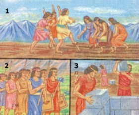
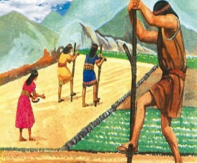

Este Sistema de trabajo fue implementado en el Tahuantinsuyoñ.
Como no existían los tributos en el imperio incaico, los tributarios o hatunrunas, eran varones con
edad de trabajar y que cumplían con su obligación, que es el trabajo para el imperio, el cual lo
realizaban cada intervalo de tiempo.
Principalmente se realizaba para la estructuras como los caminos, puentes, fortalezas, templos, acueductos,etc.
Existía tambien una mita para otros tipos de trabajo, como cargueros del Sapa Inca, músicos, chasquis y
danzantes.
La mita era obligatoria solo para los hombres casados, que oscilaban entra los 18 y 50 años

La Minka
La Minka es el trabajo que realizaban a favor del ayllu y el dios Inti, un impuesto en trabajo y por turno,
que tenía por beneficiarlo al Estado, donde habían muchas familias portando sus herramientas y alimentos.
Las familias trabajaban en la construción de locales, fortalezas, minas, cultivo de tierras y la ayuda
en la chacra para personas discapacitadas, huérfanos y ancianos.
Era obligatorio cuando el ayllu convocaba la minka, puesto que al no asistir uno, era expulsado del
ayllu y perdían derecho de sus tierras.

La minka en la agricultura
El Ayni
Es un sistema de trabajo de reciprocidad familiar entre los miembros del ayllu, destinado al trabajo agrícola
y construción de casas.
El ayni consistía en la ayuda de trabajo que hacía un grupo de personas a los miembros de una familia, esto
con la condición de que procedan a hacer lo mismo mucho después, cómo el dicho "Hoy por ti, mañana por mí".
Actualmente el ayni se sigue utilizando en varias comunidades campesinas de Perú, se ayudan en
cosas como la cocina, el pastoreo o la construción de casas.